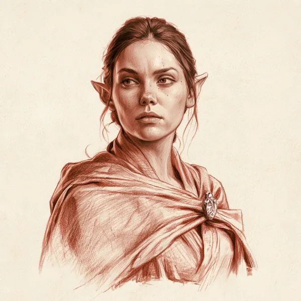
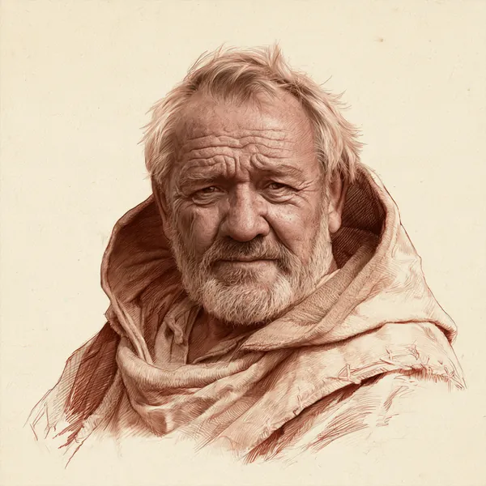
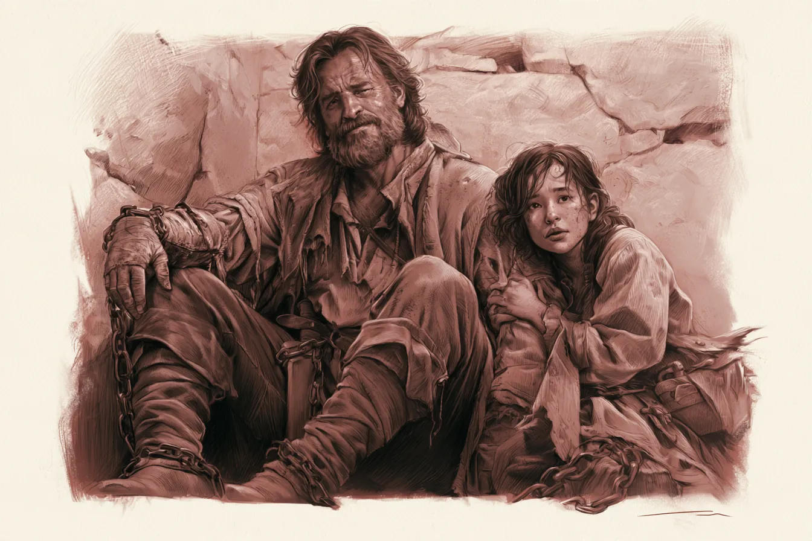
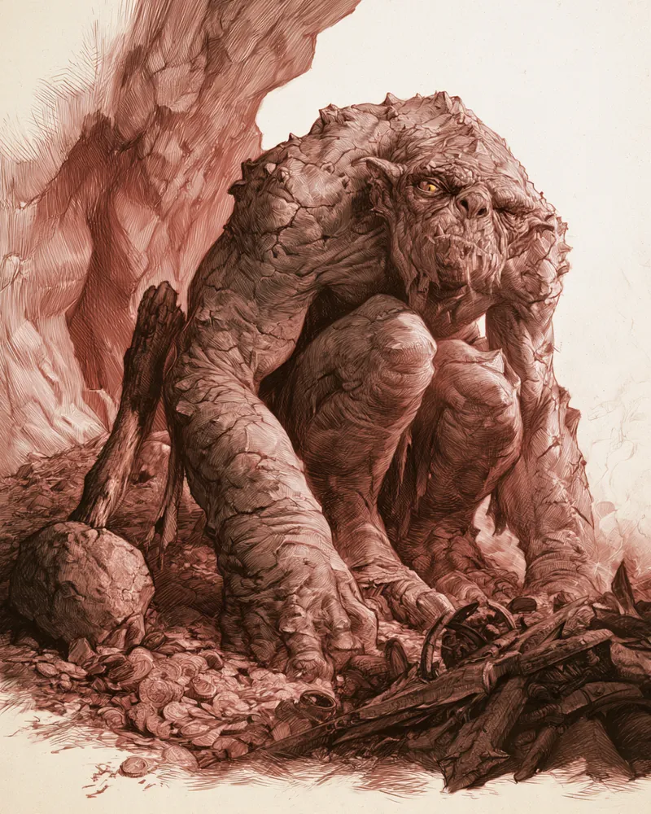

A Floresta de Pedra As colinas que ninguém atravessa duas vezes
Entre o Topo do Vento e Valfenda, onde a Estrada some entre árvores retorcidas e pedras que não nasceram ali.
O trecho ruim da Estrada Leste
Depois do Topo do Vento, a Estrada Leste deixa a charneca aberta e entra numa faixa de colinas baixas cobertas de árvores torcidas, com lascas de pedra despontando entre os troncos como ossos velhos. Os viajantes chamam esse trecho de Floresta de Pedra. Quem veio antes deles chamava de outro jeito, num idioma que a maioria já esqueceu: Trollshaws, a mata dos Trolls. Os dois nomes descrevem a mesma coisa: um lugar onde a Estrada continua, mas a segurança dela acaba.
Este é o cenário de O Tesouro da Pedra Viva, mas a região existe antes e depois daquela aventura. Esta página serve ao Mestre que quer usar a Floresta de Pedra de novo, como pano de fundo de outra Companhia ou como ameaça recorrente para a mesma.
| Onde fica | Na Estrada Leste, entre o Topo do Vento a oeste e Valfenda a leste, cruzando o rio na Última Ponte. |
| Quem vive | Ninguém, de forma permanente. Um punhado de guardiões cuida do posto da ponte; o resto é passagem. |
| Quem manda | Ninguém. Não há aldeia, não há senhor, não há lei além da prudência de cada viajante. |
| Quem protege | Os Rangers do Norte, de longe e sem cobrar crédito por isso, e os poucos guardiões da ponte. |
| O perigo central | Kroga, a Pedra Que Anda, uma Troll de pedra que vive nas cavernas ao sul da Estrada havia décadas. |
Nomes. O livro básico chama esta região de Trollshaws. Usamos Floresta de Pedra como forma corrente em português, e deixamos Trollshaws como o nome antigo que aparece na boca de personagens mais velhos ou mais lidos, como Gaerlin.
Terra de ninguém desde Arnor
Estas colinas já tiveram dono. Nos últimos séculos do reino do norte, guardas de Arnor e depois de Cardolan vigiavam esta parte da Estrada Leste, e marcavam o território com pedras erguidas e pequenas torres de observação. Não sobrou muito: um arco de entrada aqui, um círculo de pedras ali, tudo mais engolido por mato e por tempo.
O reino que se foi
Quando os sucessores de Arnor se voltaram uns contra os outros e depois contra Angmar, a guarda da Estrada enfraqueceu e por fim sumiu. A região ficou vazia, e vazio é exatamente o que atrai coisas que preferem não ser vistas.
Os Trolls que desceram
Ninguém sabe dizer há quantas gerações os primeiros Trolls de pedra desceram para estas colinas, vindos de mais ao norte, das bordas do antigo domínio de Angmar. O nome Trollshaws é mais velho que qualquer viajante vivo hoje, e mais de uma família de Trolls já chamou este trecho de lar. A maioria segue viva por evitar a luz do sol e a Estrada de dia; à noite, é outra história.
A Floresta de Pedra não precisa de um vilão fixo para funcionar. É um lugar que a Companhia atravessa com pressa, não onde ela mora. Use a história antiga (a fronteira perdida de Cardolan, as pedras erguidas) para dar peso ao cenário, e deixe a ameaça viva (Kroga, ou qualquer coisa que você queira colocar aqui depois) como o motivo de nunca acampar sem necessidade.
Colinas, pedras e uma trilha ruim
A região não é grande, mas é o bastante para se perder nela. Colinas baixas cobertas de árvores retorcidas se estendem dos dois lados da Estrada, mais densas ao sul, onde ficam as cavernas de Kroga.

As Pedras Sentinelas
Um punhado de pedras erguidas, mais velhas que qualquer Troll da região, marcando uma fronteira que ninguém mais vigia. Uma delas ainda tem uma frase legível, deixada por gente que temia esta mata muito antes de Kroga nascer.
O Covil de Kroga
Cavernas sob uma colina ao sul da Estrada, com uma entrada principal voltada para o norte e uma segunda, mais antiga, voltada para leste, que Kroga evita porque a luz da manhã entra por ela.
A trilha secreta
Um caminho estreito que contorna a emboscada mais óbvia da floresta. Quem o encontra chega ao covil sem cruzar com os batedores de Kroga no caminho.
O leito do rio
O mesmo rio que a Última Ponte atravessa corta a floresta mais ao sul, mais raso e mais traiçoeiro, sem ponte nenhuma para atravessá-lo em segurança.
O que fica em volta
| Direção | O que há |
|---|---|
| Oeste | A Estrada de volta ao Topo do Vento e, além dele, Bri. Terreno aberto e mais seguro, comparado ao que vem depois. |
| Leste | A Estrada subindo em direção às terras de Valfenda, cada vez mais vigiada pelos Elfos quanto mais perto se chega. |
| Norte | Colinas cada vez mais ásperas rumo aos antigos domínios de Angmar, de onde os primeiros Trolls desta região vieram. |
| Sul | Mata mais fechada e o rio raso, descendo rumo aos pântanos distantes perto de Tharbad. Ninguém de bom senso segue por ali sem motivo. |
Trate a Estrada Leste entre o Topo do Vento e a Última Ponte como Terra Selvagem, com o bônus de estrada de sempre. A partir da ponte, e principalmente ao sul dela, suba para Terra Sombria: os eventos de Journey aqui devem ser mais duros, e um acampamento malfeito é convite para problema.
O único teto entre o Topo do Vento e Valfenda

A ponte é de pedra, tão velha quanto qualquer construção em Eriador, larga o bastante para uma carroça e baixa o bastante para que a água quase toque as pedras em cheias de primavera. Ninguém sabe dizer quem a ergueu primeiro; os mapas mais antigos já a mostram como a última travessia segura antes das terras de Valfenda, e é daí que vem o nome.
No lado oeste, um casebre de pedra e um pequeno estábulo servem de posto para quem cruza. Não é uma vila, não é um refúgio de verdade: é um teto, uma lareira e alguém de vigília, o suficiente para não dormir ao relento na beira da Floresta de Pedra.
O que a Última Ponte oferece
| Teto e fogo | Um cômodo simples, sempre aquecido, com espaço para poucos viajantes de cada vez. |
| Vigília | Alguém de olho na Estrada e na floresta a noite toda. Não impede um ataque, mas garante que ninguém seja pego dormindo. |
| Notícias de Valfenda | Mensageiros élficos param aqui com frequência; é o lugar mais provável de Eriador para saber o que se passa do outro lado da ponte antes de chegar lá. |
| Pouco mais | Sem estoque de provisões, sem ferreiro, sem cura além de primeiros socorros. Quem precisa de mais segue para Bri ou para Valfenda. |
Ninguém paga para manter a Última Ponte. Ela sobrevive porque um punhado de gente teimosa, como Berenor, decidiu que alguém precisa cuidar dela, e porque Valfenda prefere ter um ponto de apoio deste lado do rio a não ter nenhum. Use isso para lembrar a Companhia que o posto é frágil: um mau ano, uma Companhia que nunca aparece para ajudar, e ele pode simplesmente deixar de existir.
Ninguém fica, todo mundo passa
Rangers
Os Rangers do Norte patrulham esta faixa de terra havia gerações, sem crédito e sem descanso. Poucos viajantes os veem; menos ainda sabem que devem a eles cada noite tranquila na Estrada. Um Ranger na Companhia pode reconhecer sinais deixados por outro Ranger nas Pedras Sentinelas ou perto da ponte, marcas discretas demais para qualquer outro notar.
Mensageiros de Valfenda
Elfos e servos de Elrond cruzam esta região com regularidade, quase sempre em silêncio e quase sempre depressa. Param na Última Ponte quando precisam, raramente por mais de uma noite. Gaerlin é um deles.
Mercadores, Anões e o resto
Quem tem negócio em Valfenda, ou vem de lá, passa por aqui. Caravanas de Bree, Anões a caminho das Montanhas Nebulosas, um punhado de estudiosos atrás de ruínas antigas. A maioria atravessa rápido, sem parar mais do que uma noite, e conta a história depois como quem sobreviveu a alguma coisa.
Ninguém aqui é falante. As poucas vozes que a Companhia encontra falam baixo, olham para trás com frequência e terminam as frases mais cedo do que deveriam. Não é hostilidade, é hábito de gente que aprendeu a não chamar atenção. Um herói barulhento se destaca na Floresta de Pedra do jeito errado.
Quem a Companhia encontra aqui
Gaerlin, Berenor, Aldric e Sela vêm de O Tesouro da Pedra Viva. Baradan é original deste site. Todos podem ser usados independentemente daquela aventura ter sido jogada ou não; ajuste as falas conforme o que a sua mesa viveu.

Capa presa por um broche de prata, sempre com o olhar virado para o sul quando espera alguém que está atrasado. Gaerlin faz o trajeto entre Valfenda e a Última Ponte com regularidade, levando cartas, recados e, de vez em quando, um pedido de ajuda para viajantes de confiança. Se a Companhia já a ajudou uma vez, ela se lembra do nome de cada um.
"O sul demora sempre mais do que devia."

Cuida do posto da ponte havia vinte anos, sozinho na maior parte do tempo. Conhece cada som normal da floresta e cada um que não é, o que faz dele a melhor fonte de rumores confiáveis da região. Não cobra hospedagem de quem parece precisar de verdade, mas espera ajuda de volta quando pede.
"Vinte anos, e ainda não durmo direito nas noites de lua nova."

Sobreviventes da caravana que Kroga atacou. Se a Companhia os resgatou, Berenor os acolheu na Última Ponte, e os dois ajudam no posto enquanto reúnem coragem para a última perna da viagem até Bree. Aldric fala pouco do que viu; Sela fala demais, como quem precisa contar a história para se convencer de que passou.

Patrulha a Floresta de Pedra havia mais tempo do que gostaria de admitir, e conhece o território melhor do que qualquer mapa. Raramente se mostra a viajantes comuns; se aparece para a Companhia, é porque viu algo que julgou importante o bastante para quebrar o próprio hábito de silêncio. Sabe onde ficam as Pedras Sentinelas, sabe contar os sinais de Troll na lama, e desconfia havia anos que Kroga não é a única coisa dormindo sob estas colinas.
"Se eu falo com você, é porque preciso que ouça."
Um rosto para vigiar

Uma Troll de pedra que dorme nas cavernas ao sul da Estrada havia décadas, acordada com mais frequência desde que um desmoronamento abriu uma segunda entrada em seu covil. Não é esperta, mas é velha o bastante para saber o que a mata: luz solar direta a transforma em pedra. Caça de noite, evita a boca leste do covil, e é a razão principal para não acampar na Floresta de Pedra sem necessidade. Ficha completa, incluindo a fraqueza da entrada leste, em O Tesouro da Pedra Viva.
Não é refúgio, é fôlego
A Última Ponte não substitui um refúgio de verdade. É pequena demais, isolada demais, sem os recursos que a Fase da Companhia costuma pedir. Serve para outra coisa: um ponto de fôlego no meio de uma Jornada longa, ou uma base temporária enquanto a Companhia resolve algo na Floresta de Pedra.
| O herói quer | Na Última Ponte |
|---|---|
| Descansar uma noite | Teto, fogo e vigília garantida. O suficiente para recuperar Fadiga antes de seguir viagem, não o bastante para uma Fase da Companhia completa. |
| Saber o que se passa em Valfenda | Perguntar a Gaerlin, se ela estiver de passagem, ou a qualquer mensageiro élfico que pare no posto. |
| Deixar um recado para os Rangers | Confiar a mensagem a Berenor. Ele sabe como fazê-la chegar, mesmo sem dizer exatamente como. |
| Reabastecer de verdade | Não dá. O posto não tem estoque para isso; é preciso seguir até Bri ou até Valfenda. |
Se a Companhia usa a Última Ponte como parada regular numa campanha mais longa, considere tratá-la como refúgio secundário: metade dos benefícios normais de um refúgio na Fase da Companhia, e só se Berenor ou Gaerlin estiverem bem dispostos com o grupo.
O que ronda a Floresta de Pedra
Kroga é a ameaça que a Companhia conhece, mas não é a única razão para não baixar a guarda aqui. A região carrega o peso de séculos de terra sem dono, e o que se instala em terra sem dono raramente é gentil.
| Ameaça | Como aparece na mesa |
|---|---|
| Kroga | Se sobreviveu à aventura, continua no covil ao sul. Rugidos à noite, trilhas de carroça destruídas, viajantes que não chegam do outro lado. |
| Outros Trolls | O nome Trollshaws não veio de uma criatura só. Nada impede que outra família de Trolls desça das colinas do norte, principalmente se Kroga já não estiver lá para disputar o território. |
| Aranhas do barranco | Teias entre as árvores torcidas, perto da trilha principal. Pequenas o bastante para passar despercebidas até ser tarde demais. |
| Batedores famintos | Goblins que serviam Kroga por medo, não por lealdade. Sem ela, ficam sem líder e sem comida, o que os torna imprevisíveis. |
O Selo de Cardolan recuperado em O Tesouro da Pedra Viva conecta a Floresta de Pedra às ruínas do sul e à linhagem extinta de Cardolan. Se a sua mesa quer aprofundar essa ligação, o suplemento traz Tharbad e as ruínas do antigo reino como destino natural para uma campanha que comece aqui: quem mais perdeu algo nestas terras, e o que mais espera para ser encontrado.
O que se ouve na Última Ponte
Role um Success Die quando um herói passar uma noite conversando com Berenor ou com algum viajante de passagem. Em um grande êxito numa rolagem de INSIGHT, o herói também sabe se o rumor é verdadeiro.
| 1 | "Ouvi um segundo rugido, mais fundo que o de Kroga, vindo do norte da floresta." Pode ser verdadeiro. O Mestre decide se há mesmo outro Troll. |
| 2 | "Um Ranger passou por aqui sem dizer nome, perguntou sobre as Pedras Sentinelas e sumiu antes do amanhecer." Verdadeiro. É Baradan. |
| 3 | "Dizem que há mais tesouro no covil do que Kroga jamais mostrou, coisas que ela roubou de viajantes muito antes desta geração." Verdadeiro, e ninguém foi atrás ainda. |
| 4 | "Berenor não durme nas noites de lua nova. Nunca contou por quê." Verdadeiro. Gancho para o Mestre inventar o motivo. |
| 5 | "Um estudioso de Valfenda anda perguntando sobre as pedras erguidas da floresta, dizendo que uma delas marca mais que uma fronteira." Meio verdadeiro. Há algo escrito ali que ninguém decifrou de vez. |
| 6 | "Uma caravana de Bree sumiu perto da Floresta de Pedra, com um objeto que Valfenda queria de volta." Verdadeiro. Gancho para O Tesouro da Pedra Viva. |
Ganchos de aventura
A boca leste do covil de Kroga é mais antiga que ela. Quem a escavou, e o que mais pode haver além dela, muito mais fundo do que a Companhia teve tempo de explorar?
Um pesquisador de Valfenda saiu para estudar as Pedras Sentinelas e não voltou. Gaerlin pede à Companhia que o encontre antes que Elrond mande alguém mais importante perguntar por quê.
Algo grande se move nas colinas ao norte da Estrada, deixando pegadas que não são de Kroga. Baradan pede ajuda para confirmar se é outro Troll antes que ataque a Última Ponte.
Material de fã, sem fins comerciais. Baseado em O Senhor dos Anéis de J.R.R. Tolkien e em O Um Anel 2ª edição (Core Rules e Tales from the Lone-lands), da Free League. Personagens marcados como originais foram criados para este site.